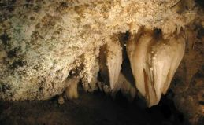
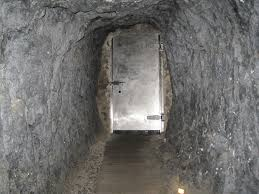
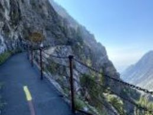
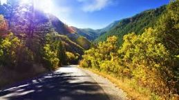
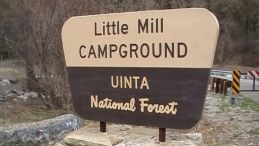

Explore the mysterious and eerie world of supernatural phenomena
Explore the mysterious and eerie world of supernatural phenomena
American Fork Canyon is said to be haunted to the point where it is said that you should leave the canyon at night, but I leave it to you to decide if it is truly haunted.
It is said tat American Fork Canyon is full of unexplained phenomena. Timpanogos Cave is said to be haunted by the spirit of two young lovers. The legend states that there was a Native American warrior named Red Cloud, fell in love with a princess. Red Cloud told the princess that he was a god and if she would marry him he will save their people from the drought. After they were married the princess found out that Red cloud lied to her. She climbed to the top of Mount Timpangogs and jumped, ending her life. Red Cloud was devastated a place her body in the cave. A heart shape stalactite grew at that spot. It is said that they still haunt the cave to this day.
Park employees and visitors have reported spine-chilling phenomena in Timpanogos Cave. After the park closing for the day employees would dae each other to go into the cave, turn off their flashlights, and wait for 10 whole minutes. Many didn't make it that long ,but those who did reported that they felt hands brushing their faces, heard footsteps ,and voices.
One night after an employee locked the door to the cave. They heard pounding on the door form inside the cave. Thinking they locked in a co-work they open the door to find that no one was on the other side. Visitors have reported seeing orbs and feeling hot breath on their necks.
Park rangers have said that on their way up the trail early in the morning, report hearing laughter and whispering around them. One employee stated that they heard thundering footsteps coming down the switchbacks toward the employee, but no one was there.
Visitors and employees reported feeling cold spots along the trail, even on hot summer days. Hikes have report ghosts.
There also have been reports of a four year old boy who appears to be lost on the trail. When hikes try to approach him, he runs back up the trail and disappears.
Some say that there is a man ho makes himself known by stomping thought the brush. He will emerge from the thick underbrush onto the trail in front of the hikers. He will glare at the hikers before vanishing.
Many have died in the canyon over the years. Rock climbers who fell to their death, car accidents ,and some to suicide. Many people have said that while driving in the canyon at night they will see someone walking down the road, trying to hitchhiker. When people would stop to offer a ride the hitchhiker despaired into the headlights.
It is said that you need to be brave to stay in the Little Mill Campground. This Campground is said to be haunted by a ghost hearse. The urban legend is that you can summon a ghost hearse by driving your car in a circle three times in the campground parking lot. It is said that you will hear a roar of a engin of an old hearse pulls up behind you. It is said that the hearse will chase you down the canyon.
Now it is your choice to decide is the American Fork canyon hunted or is it all a urban legend?